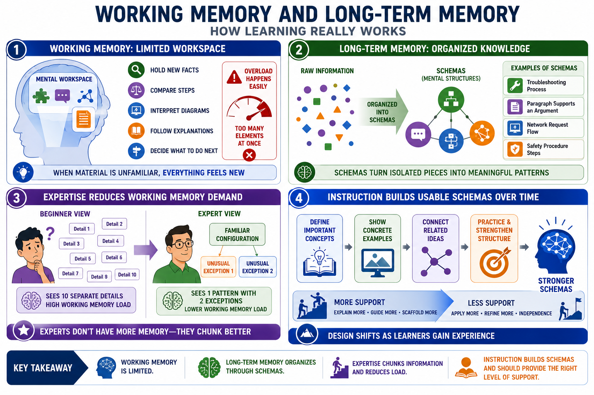

Working Memory, Long-Term Memory, and Schemas
Connecting to LMS... Progress: in progress

Narration
Working memory is limited mental workspace. It is where learners hold new facts, compare steps, interpret diagrams, follow explanations, and decide what to do next. When the material is unfamiliar, even simple-looking tasks can consume a lot of working memory because every element feels separate. The learner must hold the terms, relationships, steps, and goal in mind at the same time.
Long-term memory is different. It holds organized knowledge that can be brought back and used. Schemas, or mental structures, help people understand information as meaningful patterns rather than isolated pieces. A schema might represent how a troubleshooting process works, how a paragraph supports an argument, how a network request flows, or how a safety procedure should unfold. Schemas make complex information easier to use.
Expertise reduces working memory demand because experts have organized patterns available in long-term memory. A beginner may see ten separate details. An expert may see one familiar configuration with two unusual exceptions. This does not mean experts have unlimited working memory. It means they can chunk information more effectively because prior knowledge gives the new information structure.
Instruction should therefore help learners build usable schemas over time. That means defining important concepts, showing concrete examples, connecting related ideas, and giving learners practice that strengthens the structure. Beginners often need more support because they have fewer schemas to lean on. As learners gain experience, the design can shift from explaining every relationship to helping them apply and refine what they already know.